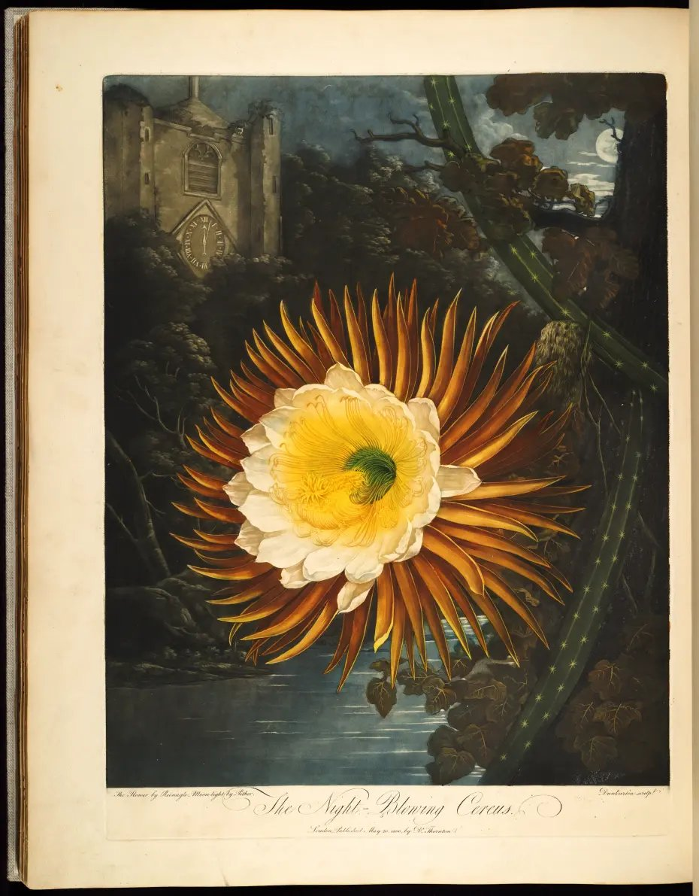

The Night-Blowing Cereus (The Temple of Flora)
Robert John Thornton · published 1800 · Colour aquatint, stipple and line engraving · Missouri Botanical Garden, Peter H. Raven Library
Free to use
Thornton gave each plate a setting to suit its flower. Here the moon lights the water and the turret clock points to twelve, the hour of the night when the cereus is fully open; the lettering on the plate credits the flower to Reinagle and the moonlight to Pether. Between 1798 and 1807 the project produced thirty-three coloured plates in aquatint, stipple and line engraving.